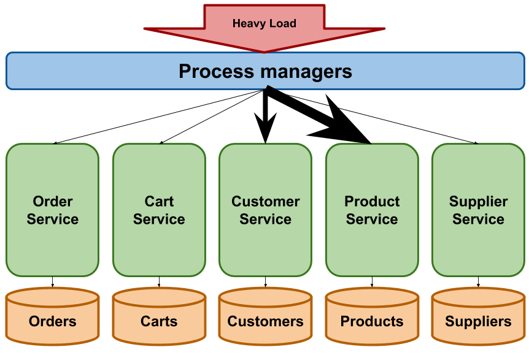
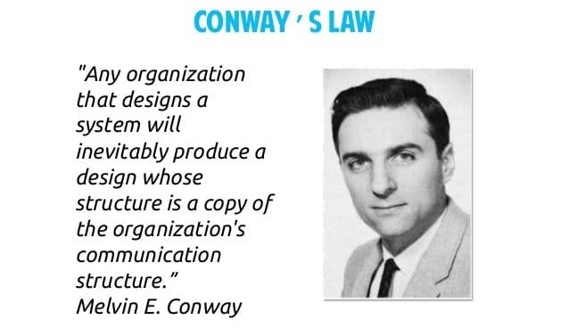
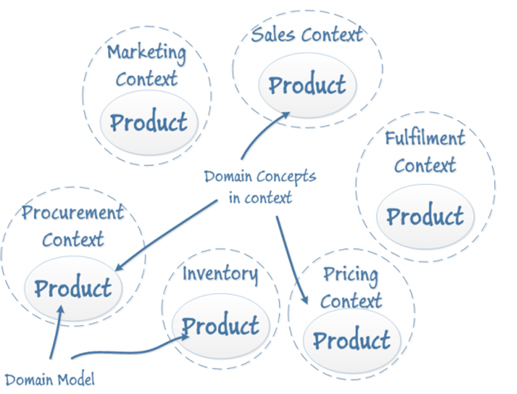
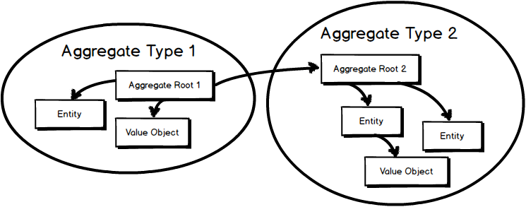
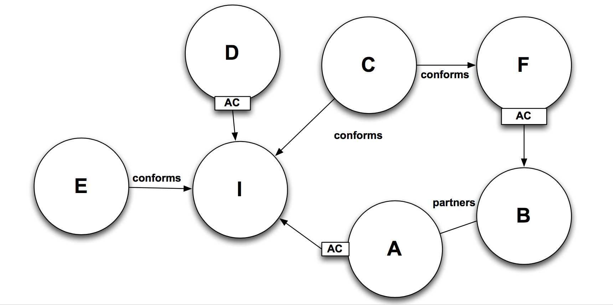
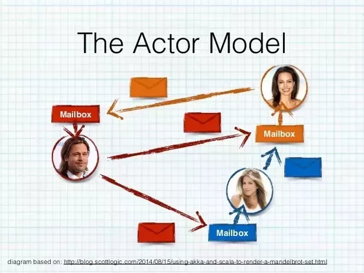

Le Domain Driven Design
à la rescousse des architectures Microservices ?
Quelques principes de design
à la rescousse des architectures Microservices ?

#jakku-workin sur le Slack communautaire
Les Microservices
Style d'architecture qui structure un système autour de services légers et faiblement couplés
Caractéristiques
- Responsabilité business unique
- Forte cohésion
- Couplage faible
- Autonomes
Quels avantages ?
- Système plus modulaire
- Facilitent le scaling
- Solutions adaptées à chaque situation
- Équipes autonomes
Les challenges
- Les frontières d'un µS
- La communication
- La gestion des transactions
Les frontières d'un microservice

Découpage technique
Manque de cohésion
Un changement dans un µS
nécessite des modifications dans d'autres µS
Déployer un µS
nécessite le déploiement d'autres µS
Le même développeur intervient sur plusieurs µS
aboutit à un
monolithe distribué
Services par entité
Héritage du SOA
Couplage sémantique
Besoin de connaître les versions des services avec lesquelles on est compatible
Crée des bottlenecks
Gestion complexe des transactions
en two phases commit
La disponibilité du système dépend de la quasi totalité des µS
Loi de conway
Comment assurer une meilleure cohesion de chaque service ?
Un µS est responsable d'un ensemble de comportements
Besoin d'un modèle adapté
Aussi simple que possible
Comment construire ce modèle ?
Utiliser le langage des experts du domaine

Les Bounded Contexts
Bornes d'un bounded context
=
Bornes d'un µS
Bonne piste, mais pas systématique
Comment faire ?
Agrégats
Cluster d'objets
composé d'entités
et de value objects
Expression du domaine métier
porte le modèle
expose une collection de traitements métiers
à travers la racine de l'agrégat
contrôle les invariants
peut lever des événements
et l'exposer au reste du système
unité transactionnelle
assure la consistance de l'ensemble
Bornes d'un agrégat
=
Bornes d'un µS
La communication
Modes de communication
Shared database
RPC / synchrone
Messaging / asynchrone
Shared database
Couplage au build
Couplage au deploy
Couplage au runtime
Shared mutable state is the root of all evil
Henrik Eichenhardt
http://henrikeichenhardt.blogspot.fr/2013/06/why-shared-mutable-state-is-root-of-all.html
Communications synchrones
solution la plus maitrisée
reproduit les mécanismes de communication des monolithes...
...sur un réseau non fiable
augmente le niveau de dépendance aux autres services
perte d'autonomie
Messaging
découple les services par inversion de contrôle
redonne de l'autonomie aux services
rend les services plus tolérants à l'erreur
change le modèle de consistance
ACID
Eventual Consistency
Les Domain Events
Les événements existent partout dans le domaine
Moyen de communiquer
Permettent de faire du contrôle de cohérence
Prennent la forme de value objects...
...communiqués au monde extérieur
exemples
ProductPurchased
OrderShipped
MoneyWithdrawn
TransferCompleted
Event driven architecture
Choregraphy over orchestration
Event Storming
Emergence...
- Ubiquitous Language
- Bounded Contexts
- Chorégraphie
Contrats
Quelles sont les dépendances entre µS ?
Quel service impose aux autres son modèle ?
Comment assure-t-on la compatibilité entre services ?
Comment coordonne-t-on le développement et le déploiement des services ?
Context mapping
pas un diagramme de flux
Diagramme d'influence
upstream et downstream
Types de relation
- Partnership
- Customer - Supplier
- Conformist
- Anti Corruption Layer
- Shared Kernel
- ...
Le pattern utilisé influence...
...les contrats d'interface
Commandes définit ses attentes à Catalogue Produits
...la synchronisation des backlogs
Les besoins de Commandes impacte le backlog de Catalogue Produits
...le mode de communication des équipes
...la synchronisation des déploiements
Commandes peut être déployé indépendamment de Clients
décrit la situation actuelle
documente la façon dont les contextes influent les uns sur les autres
documente la façon dont les µS doivent communiquer
Quoi retenir ?
Pensez d'abord "domaine"
- son langage
- ses contextes
Pensez "comportements"
plutôt que "data"
Expérimentez le context mapping
Considérez les architectures event-driven et le messaging
Essayez les ateliers d'Event Storming
Faites du monolith-first !
Et passez en µS lorsque leurs bornes seront évidentes
Quand vous aurez gagné en maturité sur le sujet...
...Essayez le Modèle Acteurs
 https://www.infoq.com/news/2013/06/actor-model-ddd- http://www.michaelnygard.com/blog/2017/12/the-entity-service-antipattern/
- https://www.simplethread.com/the-distributed-monolith/
- http://vladikk.com/2018/01/21/bounded-contexts-vs-microservices/
- https://hackernoon.com/microservices-bounded-context-cohesion-what-do-they-have-in-common-1107b70342b3
- https://www.infoq.com/news/2016/12/microservices-events-ddd
- http://henrikeichenhardt.blogspot.fr/2013/06/why-shared-mutable-state-is-root-of-all.html
- http://blog.christianposta.com/microservices/why-microservices-should-be-event-driven-autonomy-vs-authority/
- https://www.infoq.com/presentations/ddd-microservices-2016
- https://www.infoq.com/articles/microservices-aggregates-events-cqrs-part-1-richardson
- https://www.infoq.com/articles/microservices-aggregates-events-cqrs-part-2-richardson
- https://blog.coffeeapplied.com/building-uis-in-devops-microservices-environment-part-3-headless-microservices-bounded-contexts-1ade60f2350b
- https://www.infoq.com/articles/ddd-contextmapping
- http://robertgreiner.com/2014/08/cap-theorem-revisited/
- https://www.infoq.com/news/2013/06/actor-model-ddd
@JeromeAvoustin
Passez nous voir !
1ère journée gratuite ! 🎉🎉